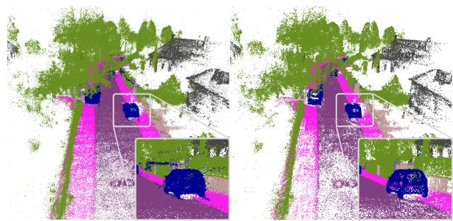
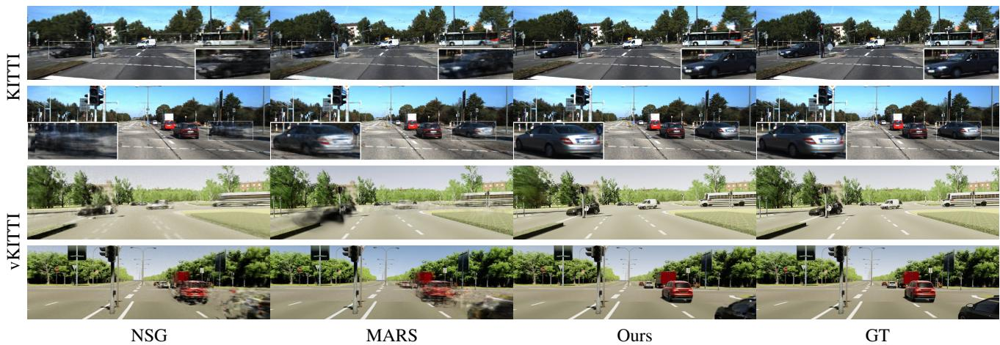
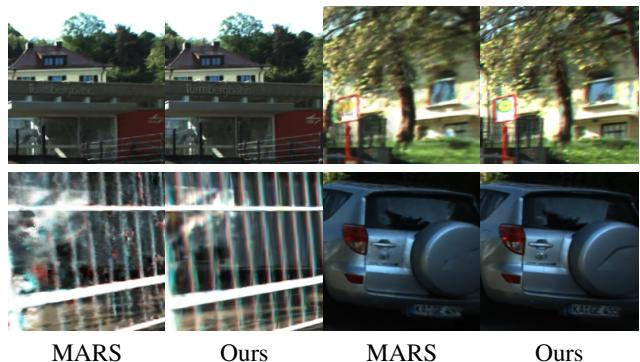
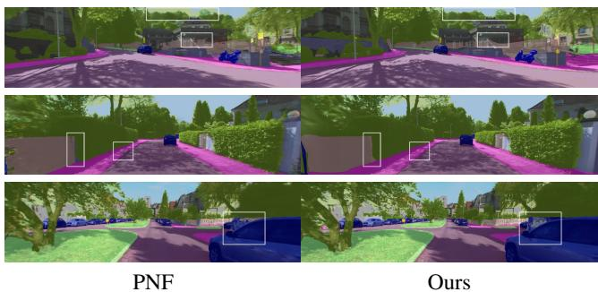
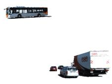
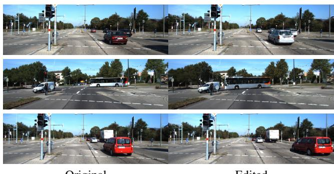
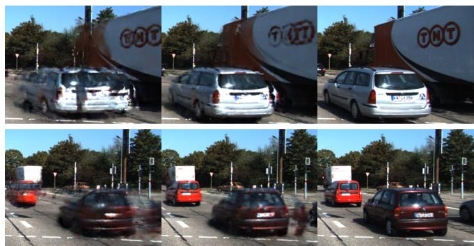

HUGS: Holistic Urban 3D Scene Understanding via Gaussian Splatting
Hongyu Zhou1, Jiahao Shao1, Lu Xu1, Dongfeng Bai2, Weichao Qiu2, Bingbing Liu2 Yue Wang1, Andreas Geiger3,4, Yiyi Liao1B
1 Zhejiang University 2 Huawei Noah’s Ark Lab 3 University of Tubingen ¨ 4 Tubingen AI Center¨

Figure 1. Illustration. Given posed RGB images as input, our method lifts noisy 2D & 3D predictions to the 3D space via decomposed 3D Gaussians, and enables holistic scene understanding in 2D and 3D space.
Abstract
Holistic understanding of urban scenes based on RGB images is a challenging yet important problem. It encompasses understanding both the geometry and appearance to enable novel view synthesis, parsing semantic labels, and tracking moving objects. Despite considerable progress, existing approaches often focus on specific aspects of this task and require additional inputs such as LiDAR scans or manually annotated 3D bounding boxes. In this paper, we introduce a novel pipeline that utilizes 3D Gaussian Splattingfor holistic urban scene understanding. Our main idea involves the joint optimization of geometry, appearance, semantics, and motion using a combination of static and dynamic 3D Gaussians, where moving object poses are regularized via physical constraints. Our approach offers the ability to render new viewpoints in real-time, yielding 2D and 3D semantic information with high accuracy, and reconstruct dynamic scenes, even in scenarios where 3D bounding box detection are highly noisy. Experimental results on KITTI, KITTI-360, and Virtual KITTI 2 demonstrate the effectiveness of our approach. Our project page is at https://xdimlab.github.io/hugs website.
1. Introduction
Reconstructing urban scenes is an important task in computer vision with numerous applications. Consider the creation of a photorealistic simulator for autonomous driving, in this context, it becomes crucial to holistically represent all aspects of the scene relevant to driving. This entails tasks like synthesizing images at interpolated and extrapolated viewpoints in real-time, reconstructing 2D and 3D semantics, generating depth information, and tracking dynamic objects. To minimize sensor cost, achieving such a holistic understanding exclusively from posed RGB images holds significant value.
With the rise of neural rendering, many approaches have emerged to lift 2D information to 3D space, enabling scene understanding based solely on RGB images. Several previous works focus on reconstructing static urban scenes, achieving high-quality novel view appearance and semantic synthesis [11, 30, 51]. Another line of work addresses dynamic scenes [19, 27, 40, 46], but most of them require ground truth 3D bounding boxes of dynamic objects as input, which are costly to acquire. PNF [19] is the only method that utilizes noisy bounding boxes obtained through monocular 3D detection and tracking, where the transformations of the bounding boxes are jointly optimized during training. However, na¨ıve joint optimization of per-frame pose transformations is prone to local minima and sensitive to the initialization. Furthermore, while existing methods are capable of rendering accurate 2D semantic labels, it is non-trivial to extract accurate semantics in 3D due to the inaccurate (inferred) 3D geometry. In addition, most of these methods are unable to achieve real-time rendering.
In this paper, We leverage predicted 2D semantic labels, optical flow, and 3D tracks, despite their inherent noise and imperfections, to achieve a holistic understanding of the dynamic scenes based on RGB images (see Fig. 1). Towards this goal, we infer geometry, appearance, semantics, and motion in 3D space using a decomposed scene representation. We leverage 3D Gaussians as the scene representation, which have recently demonstrated superior novel view synthesis performance on static scenes with real-time rendering capability [17]. Specifically, we propose to decompose the scene into static regions and rigidly moving dynamic objects. We model the poses of these moving objects while adhering to the physical constraints of a unicycle model, effectively reducing the impact of noise during tracking and leading to superior performance compared to optimizing object poses individually. This allows us to reconstruct dynamic scenes even when 3D bounding box predictions are highly noisy. Further, we extend 3D Gaussian Splatting to model camera exposure and explore initialization on dynamic scenes, enabling state-of-the-art novel view synthesis performance on urban scenes. Additionally, we incorporate semantic information into 3D Gaussians, enabling the rendering of semantic maps and the extracting of 3D semantic point clouds. Finally, we integrate the RGB, semantics and optical flow to jointly supervise the model training, and investigate the interaction between these image cues to improve the performance of the scene understanding tasks.
Our main contributions are as follows: 1) Our method addresses the task of dynamic 3D urban scene understanding by extending Gaussian Splatting to model additional modalities, including semantic, flow, and camera exposure, as well as dynamic objects. 2) We achieve the decomposition of static and multiple dynamic objects from sparse urban images and noisy labels by incorporating physical constraints, omitting the requirement of ground truth 3D bounding boxes for reconstructing dynamic scenes. 3) Our method achieves state-of-the-art performance on various benchmarks, including novel view appearance and semantic synthesis, as well as 3D semantic reconstruction.
2. Related Work
3D Scene Understanding: Understanding urban scenes from various aspects has been considered essential for autonomous driving. Numerous techniques have focused on predicting semantic labels [5, 9, 35], depth maps [10, 28], and optical flows [42] solely from 2D input images. While these methods have demonstrated impressive accuracy within the confines of the 2D space, they often fall short of grasping a profound understanding of the underlying 3D environment. Consequently, this limitation can hinder the multi-view consistency of their predictions. Another line of approach suggests conducting semantic scene understanding solely based on 3D input [29, 31]. This approach heavily relies on LiDAR input, which is known to be costly and resource-intensive to collect.
More recently, a particular approach has emerged, aiming to elevate 2D information to the 3D space to facilitate scene understanding within the 2D image domain. This advancement is made possible through the utilization of differential neural rendering techniques, such as NeRF (Neural Radiance Fields) [25]. Numerous NeRF-based approaches [2–4, 14, 26, 34, 38] have made significant advancements in terms of both quality and efficiency. Furthermore, some other techniques have empowered NeRF with improved scene understanding capabilities. Semantic NeRF [52] first proposes the lifting of noisy 2D annotations to the 3D space based on NeRF. Significant progress has been achieved through the efforts of the following works [37, 44, 49]. While these methods have shown promising results, they are currently limited to dense input viewpoints within indoor scenes and are only applicable to static environments. In this study, our focus lies in dynamic 3D scene understanding specifically tailored to urban settings, achieved by lifting 2D information to the 3D space.
Urban Scene Reconstruction: Numerous studies have been conducted to reconstruct urban scenes using various methods. These methods can be categorized into three classes: point-based [1, 32], mesh-based [12, 20] and NeRF-based [15, 22, 24, 30, 33, 39, 51]. While point-based and mesh-based methods demonstrate faithful reconstructions, they struggle to recover all aspects of the scene, especially when it comes to high-quality appearance modeling. In contrast, NeRF-based models allow for reconstructing scene appearance and enable high-quality rendering of novel viewpoints. However, these approaches are primarily designed for static scenes, lacking the ability to handle dynamic urban environments. In this study, our focus lies in addressing the challenges of dynamic urban scenes.
Several methods have also been developed to address the reconstruction of dynamic urban scenes. Many of these approaches rely on the availability of accurate 3D bounding boxes for moving objects in order to separate the dynamic elements from the static components, as seen in NSG [27], MARS [40] and UniSim [46]. PNF [19] takes a different approach by leveraging monocular-based 3D bounding box predictions and proposes a joint optimization of object poses during the reconstruction process. However, our experimental observations indicate that the straightforward optimization of object poses yields unsatisfactory results due to the absence of physical constraints. Another method, SUDS [36], avoids the use of 3D bounding boxes by grouping the scene based on learned feature fields. However, the accuracy of this approach lags behind. In parallel, the concurrent work EmerNeRF [45] follows a similar idea to SUDS by decomposing the scene purely into static and dynamic components. In our research, we possess the capability to further decompose individual dynamic objects within the scene and estimate their motion.

Figure 2. Method Overview. We decompose the scene into static regions and N rigidly moving dynamic objects. Each dynamic object is represented using 3D Gaussians in its canonical space and then transformed to the world coordinates based on transformations constrained by a unicycle model. We use N unicycle models of different parameters to individually represent the motion of N dynamic objects. Each 3D Gaussian encompasses information about appearance and semantics, whereas the optical flow can be obtained by calculating the Gaussian center’s motion, enabling the rendering of RGB images, semantic maps, and optical flow within a unified model. Our method is supervised using RGB images, noisy 2D semantic labels, and noisy optical flow, denoted as , and , respectively.
Gaussian Splatting: 3D Gaussians are demonstrated as a powerful scene representation for novel view synthesis. While the original 3D Gaussian Splatting [17] primarily focuses on static scenes, subsequent research has extended this approach to handle dynamic scenes. Dynamic 3D Gaussians [23] necessitates a substantial number of training views accompanied by ground truth masks. Other studies [43, 47, 48, 53] have also attempted to decompose 3D Gaussians into static and dynamic components, without further decomposing multiple dynamic objects. In our work, we strive to achieve the decomposition of each individual dynamic object while being capable of learning such decomposition from sparse urban images and noisy labels.
3. Method
Fig. 2 illustrates our proposed method, HUGS. Our algorithm takes as input posed images of a dynamic urban scene. We decompose the scene into static and dynamic 3D Gaussians, with the motion of dynamic vehicles being modeled via a unicycle model. The 3D Gaussians represent not only appearance but also semantic and flow information, allowing for rendering the RGB images, semantic labels, as well as optical flow through volume rendering.
3.1. Decomposed Scene Representation
We assume that the scene is composed of static regions and a total of N dynamic vehicles exhibiting rigid motions. Static regions are represented using static Gaussians in the world coordinate system. Each of the N dynamic vehicles is modeled using dynamic Gaussians in a canonical coordinate system along with a set of rigid transformations 1 with t denoting the timestamp.
Static and Dynamic 3D Gaussians: Following Gaussian
Splatting [17], we model both static and dynamic regions using 3D Gaussians. Each Gaussian is defined by a 3D covariance matrix and a 3D position , as well as an opacity
In addition, each Gaussian represents a color vector parameterized as SH coefficients. In this work, we propose to additionally model semantic logits of each 3D Gaussian, allowing for rendering 2D semantic labels. Furthermore, we can naturally obtain a rendered optical flow for each 3D Gaussian by projecting the 3D position to the image space at two different timestamps, t1 and , and calculating the motion.
Unicycle Model: We parameterize the transformations following the unicycle model1. The state of a unicycle model is parameterized by three elements: where and represent the first two axes of t with , and is the yaw angle of . To adapt the continuous unicycle model to discrete frames, we derive the calculus of the unicycle model for the vehicle transition from timestamp t to as follows:
Here, represents the forward velocity, and is the angular velocity. This model integrates physical constraints when compared to directly optimizing the transformations of dynamic vehicles at every frame independently, thus enabling smoother motion modeling of moving objects and making them less prone to local minima.
While it is possible to define an initial state and derive the following states recursively based on velocities, and , such a recursive parameterization is challenging to optimize. In practice, we define a set of trainable states along with trainable velocities , and add a regularization term to ensure that the vehicle’s states adhere to the characteristics of a unicycle model in Eq. 2. The regularization terms will be described in Section 3.3. Additionally, we model the vertical locations of the vehicle, , as optimizable parameters.
3.2. Holistic Urban Gaussian Splatting
Given the HUGS representation specified above, we are able to render images, semantic maps and optical flow to supervise the model or make predictions at inference time. We now elaborate on the rendering of each modality.
Novel View Synthesis: The combination of static and dynamic Gaussians can be sorted and projected onto the image plane via α-blending:
Here, is determined by the projected 2D Gaussian and the 3D opacity see supplement for details.
In contrast to single-object scenes, urban scenes typically involve more complex lighting conditions and the images are usually captured with auto white balance and auto exposure. NeRF-based methods [24] typically feed a perframe appearance embedding along with the 3D positions into a neural network to compute the color, thereby compensating exposure. However, when working with 3D Gaussians, there is no neural network capable of processing appearance embeddings. Inspired by Urban Radiance Field [30], we generate an exposure affine matrix for each camera by mapping the camera’s extrinsic parameters to an affine matrix and vector via a small MLP:
We demonstrate that modeling the exposure improves rendering quality in the experimental section.
Semantic Reconstruction: Similarly to Eq. 3, we can obtain 2D semantic labels via α-blending based on the 3D semantic logit s:

Figure 3. 3D Semantic Reconstruction. Comparison between applying softmax to accumulated 2D semantic logits (left) and to 3D semantic logits (right). Normalizing semantic logits in 3D space clearly reduces floaters and yields better 3D semantic reconstruction than the 2D normalization counterpart.
Note that we perform the softmax operation on 3D semantic logits prior to blending, in contrast to most existing methods that apply softmax to 2D semantic logits S¯ obtained by accumulating unnormalized 3D semantic log its [11, 52]. As shown in Fig. 3, applying softmax in 2D space leads to noisy 3D semantic labels. This is due to the fact that 2D space softmax can produce accurate 2D semantics by adjusting the scale of the 3D semantic logits, allowing a single sampled point with a substantial logit value to significantly influence the volume rendering outcome. For example, an undesired floating point labeled with “car” may not be penalized despite the target rendered label is “tree”, as long as there is a 3D Gaussian providing a large logit value of “tree” along this ray. Our solution instead removes such floaters by normalizing logits in 3D space. See supplement for more quantitative and qualitative details.
Optical Flow: The 3D Gaussian representation also enables the rendering of optical flow. Given two timestamps and , we first calculate the optical flow of each 3D Gaussian’s center as . Specifically, we project to the 2D image space based on the camera’s intrinsic and extrinsic parameters:
and then calculate the motion vector as Next, we render the optical flow via accumulate the optical flows via volume rendering:
Note that this rendering process assumes that any pixel of a 2D Gaussian splat shares the same optical flow direction as the corresponding Gaussian center but with scaled magnitude. While this is indeed a simplified approximation, we observe this to work well in practice.
In our experiments, we demonstrate that supervising the rendered optical flow with pseudo ground truth helps to improve the performance of the geometry in terms of rendered depth maps. This is due to the fact that flow provides explicit pixel correspondences, which is inherently supervising the underlying surface location.
3.3. Loss Functions
We leverage pre-trained recognition models to provide noisy 2D semantic and instance predictions, noisy 2D optical flow, as well as noisy 3D tracking results. These easyto-obtain predictions are critical to enable RGB-only holistic scene understanding in both 2D and 3D space, without relying on LiDAR input or 3D semantic supervision.
Image-based Losses: Our model is supervised with the ground truth images using a combination of L1 and SSIM losses. Let ˜I denote the rendered image and ˆI the ground truth, our rendering loss is defined as follows:
We additionally apply the cross-entropy loss to the rendered semantic label wrt. pseudo-2D semantic segmentation ground truth Sˆ:
Similarly, we leverage pseudo optical flow ground truth to supervise the rendered optical flow using:
While 3D Gaussians can enable the rendering of optical flow without any supervision, we observe artifacts in the rendered flow without supervision. Further, the optical flow supervision yields an improvement in the depth maps as shown in our ablation study.
Unicycle Model Losses: We use a unicycle model to guide the noisy 3D bounding box predictions:
where and are the and locations of a noisy 3D bounding box at timestamp t.
As mentioned earlier, we parameterize the vehicle’s states and the velocities as learnable parameters. Hence, we add the following regularization to make the states adhere to the unicycle model as follows:
In addition, we regularize the acceleration of the forward velocity and angular velocity to be smooth:
The total loss can be summarized as follows:
3.4. Implementation Details
Initialization: While 3D Gaussian Splatting is not highly sensitive to the initialization, better initialization can yield better performance. We utilize the dense point cloud obtained from COLMAP for initialization by default. When the ego-vehicle is static, we use random initialization.
Pseudo-GTs: We utilize InverseForm [5] to generate pseudo ground truth for semantic segmentation. For initializing the unicycle model, we employ a monocular-based method, QD-3DT [16], to acquire pseudo ground truth for 3D bounding boxes and tracking IDs at each training view. For optical flow, we use Unimatch [41] to obtain pseudo ground truth.
Training: We train the model for 30,000 iterations on dynamic scenes. For the KITTI-360 leaderboard, we perform early stopping at 15,000 iterations. Following [17], we adopt the approach of setting the weight parameter λSSIM to 0.2. Furthermore, we assign weights and as 0.01, while and are set as 0.1. The learning rate of the unicycle model parameters progressively decreases during training.
Time Consuming: Our approach can converge within 30 minutes and achieve inference at a speed of approximately 93 fps on a single NVIDIA RTX 4090. While NSG and MARS inference at a speed of less than 1 fps. A speed breakdown of our method is provided in the supplement.
4. Experiments
Datasets: We perform a range of experiments to assess the performance of our model across various tasks, such as novel view synthesis, novel semantic synthesis, and 3D semantic reconstruction. These experiments are conducted using the KITTI [13], Virtual KITTI 2 (vKITTI) [7], and KITTI-360 datasets [21]. We apply 50% dropout rate following existing evaluation protocols [21, 40] on all of these datasets.
Baselines: We evaluate the dynamic scene novel view synthesis task by comparing our method with NSG [27] and

Figure 4. Qualitative Comparison on KITTI and vKITTI. We use monocular-based 3D bounding box predictions for KITTI, and manually jittered 3D bounding boxes for vKITTI. We zoom in on a patch of a dynamic object for each KITTI scene.
| KITTI Scene02 | KITTI Scene06 | vKITTI Scene02 | vKITTI Scene06 | |||||||||
| PSNR↑ | SSIM↑ | LPIPS↓ | PSNR↑ | SSIM↑ | LPIPS↓ | PSNR↑ | SSIM↑ | LPIPS↓ | PSNR↑ | SSIM↑ | LPIPS↓ | |
| NSG [27] | 23.00 | 0.664 | 0.373 | 23.78 | 0.717 | 0.234 | 21.40 | 0.689 | 0.376 | 20.60 | 0.719 | 0.255 |
| MARS [40] | 23.30 | 0.731 | 0.139 | 25.09 | 0.856 | 0.083 | 22.67 | 0.882 | 0.128 | 21.67 | 0.856 | 0.134 |
| Ours | 25.42 | 0.821 | 0.092 | 28.20 | 0.919 | 0.027 | 26.21 | 0.911 | 0.040 | 26.65 | 0.921 | 0.030 |
Table 1. Novel View Synthesis on Dynamic Scenes with predicted or noisy 3D trackings.
MARS [40], which are two open-source methods for dynamic urban scenes. Additionally, we compare the static novel view appearance and semantic synthesis task with mip-NeRF [2], PNF [19], and MARS [40]. Furthermore, we assess the quality of 3D semantic scene reconstruction by comparing it with Semantic Nerfacto [34].
Evaluation Metrics: For novel view synthesis, we adopt the default setting for quantitative assessments, including the evaluation of PSNR, SSIM and LPIPS [50]. Regarding novel view semantic synthesis, we follow KITTI-360 [21], which reports the mean Intersection over Union on class and category , respectively. Further, we evaluate our performance on 3D Semantic Segmentation against a ground truth semantic LiDAR point cloud, measuring both geometric reconstruction quality and semantic accuracy. The geometric quality is evaluated as the chamfer distance between two point clouds, including completeness and accuracy, whereas the semantic accuracy is also measured using mIoUcls. In our ablation study, we evaluate 3D tracking performance by measuring the rotation and translation error eR and of our optimized 3D bounding boxes wrt. the ground truth.
4.1. Novel View Synthesis
We first evaluate HUGS for novel view synthesis on various datasets including dynamic and static scenes. For dynamic scenes, we leverage noisy 3D bounding box predictions as input, instead of using the ground truth. Despite not being our main focus, we include a comparison of using ground truth 3D bounding boxes in the supplement.
Dynamic Scene with Noisy 3D Bounding Boxes: Following [27, 40], we evaluate our performance on dynamic scenes of the KITTI and vKITTI datasets. In contrast to these methods that leverage ground truth poses, we investigate a more practical scenario where the bounding boxes are generated by a monocular-based 3D tracking algorithm, QD-3DT [16], in Table 1. Here, the predicted 3D bounding boxes are only provided for training views, as testing views should not be used as inputs for the tracking model. In experiments where the unicycle model is not utilized, the bounding boxes of testing views are obtained through linear interpolation from neighbour training views. Where the unicycle model is used, the bounding boxes of testing views are computed using Eq. 2. For vKITTI, there is no pre-trained monocular tracking algorithm. We hence jitter the ground truth poses to simulate noisy monocular predictions, with an average noise of 0.5 meters in translation and 5 degrees in rotation. Our model’s robustness wrt. various levels of noise will be analyzed in the ablation study.
Table 1 demonstrate that our method consistently outperforms against the baselines. Note, that QD-3DT yields reasonable predictions on the KITTI dataset2. Hence, NSG and MARS reconstruct the dynamic objects reasonably well, but with more blurriness and artifacts (see Fig. 4), as they do not model the optimization of the object poses. In contrast, our method allows for reconstructing dynamic objects with sharp details, not only in cases of minor pose error on the KITTI dataset but also on the vKITTI dataset with more severe noise.

Figure 5. Details Qualitative Comparison with MARS on KITTI-360 Leaderboard.
| PSNR↑ | SSIM↑ | LPIPS↓ | |mIoUcls ↑ mIoUcat ↑ | ||
| mip-NeRF [2]] | 21.54 | 0.778 | 0.365 | 48.25 | 67.47 |
| PNF [19] | 22.07 | 0.820 | 0.221 | 73.06 | 84.97 |
| MARS [40] | 23.09 | 0.857 | 0.174 | ||
| Ours | 23.38 | 0.870 | 0.121 | 72.65 | 85.64 |
Table 2. Novel View Semantic and Appearance Synthesis on KITTI-360.
Static Scene Leaderboard: We further evaluate our performance on the KITTI-360 leaderboard, which contains 5 static sequences. Our method achieves state-of-the-art performance on the leaderboard as in Table 2 (left), demonstrating the effectiveness of the 3D Gaussian representation in modeling complex urban scenes. As we will discuss in the ablation study, incorporating the affine transform to model camera exposure is important for reaching high fidelity. Fig. 5 shows the qualitative comparison of our proposed method to another top-ranking method, MARS, on the leaderboard.
4.2. Semantic and Geometric Scene Understanding
Next, we evaluate our model on various semantic and geometric scene understanding tasks on the KITTI-360 dataset.
Novel View Semantic Synthesis: Our holistic representation also enables novel view semantic synthesis. Hence, we submit our novel view semantic synthesis performance to the KITTI-360 leaderboard for comparison as well, see Table 2 (right). Despite not leveraging category-level prior as done in previous work [19], our approach achieves comparable performance to the SOTA [19] as shown in Fig. 6.
3D Semantic Scene Reconstruction: While existing 2Dto-3D semantic lifting methods solely evaluate their performance in the 2D image space, we further evaluate our performance in the 3D space to examine the underlying 3D geometry. To this goal, we leverage the ground truth LiDAR points provided by the KITTI-360 dataset for evaluation. With each Gaussian possessing semantic information, we can obtain a semantic point cloud by extracting the Gaussian’s center µ and its semantic label. We evaluate the geometric quality and semantic accuracy of this semantic point cloud in Table 3. We compare our method with Semantic Nerfacto [34], a Semantic NeRF implemented using a more advanced backbone, as the state-of-the-art novel view semantic synthesis method, PNF, in Table 2 is not opensource. For this baseline, we extract a semantic point cloud by specifying a threshold to the density field. While Semantic Nerfacto enables rendering faithful 2D semantic labels as shown in the supplement, the underlying 3D semantic point cloud is significantly worse in comparison. The Gaussian based representation instead allows for extracting a much more accurate semantic point cloud in comparison.

Figure 6. Qualitative Comparison with PNF on KITTI-360 Leaderboard.
| acc.↓ | comp.↓ | mIoUcls ↑ | |
| Semantic Nerfacto | 1.508 | 24.28 | 0.055 |
| Ours | 0.233 | 0.214 | 0.505 |
Table 3. 3D Semantic Reconstruction on KITTI-360. Note that all metrics are calculated in 3D space.
4.3. Scene Editing
Our decomposed scene representation enables various downstream applications. Our method allows for decomposing foreground moving objects from the background as shown in Fig. 7. Further, we can edit the scene by swapping dynamic objects, or manipulating their rotation and translations, see Fig. 8.
4.4. Ablation Study
We conduct ablation studies on dynamic and static scenes, respectively.
Dynamic Scene: As KITTI provides accurate 3D bounding box ground truth, we ablate the effectiveness of our unicycle model on KITTI by manually adding noise to the 3D bounding boxes and evaluate both the novel view synthesis results and the tracking performance, see Table 4. In this experiment, we compare our full model to two variants, i.e., using the noises without optimization (w/o opt., w/o uni.), and performing na¨ıve per-frame optimization without using the unicycle model (w/ opt., w/o uni.). The results validate the effectiveness of the unicycle model, which obviously improves the rendering quality and 3D tracking accuracy. Qualitative results in Fig. 9 further verify the effectiveness of our unicycle model in enabling accuracy object reconstruction given noisy 3D bounding boxes.
Edited
| KITTI (5% noise) | KITTI (10% noise) | KITTI (20% noise) SSIM↑ LPIPS↓ eR ↓ | |||||||||||||
| PSNR↑ | SSIM↑ LPIPS↓ | eR↓ | et↓ | PSNR↑ | SSIM↑ LPIPS↓ | eR↓ | et↓ | PSNR↑ | et↓ | ||||||
| w/o opt., w/o uni. | 23.83 | 0.878 | 0.062 | 0.031 | 0.027 | 22.16 | 0.861 | 0.079 | 0.063 | 0.106 | 20.28 | 0.835 | 0.101 | 0.125 0.425 | |
| w/ opt., w/o uni. | 24.80 | 0.897 | 0.038 | 0.022 | 0.051 | 22.75 | 0.879 | 0.056 | 0.054 0.130 | 20.56 | 0.855 | 0.081 | 0.135 0.612 | ||
| w/ opt., w/ uni. (Ours) | 28.78 | 0.928 | 0.023 | 0.017 0.022 | 26.66 | 0.908 | 0.032 | 0.037 0.035 | 23.59 | 0.875 | 0.061 | 0.081 0.176 | |||
Table 4. Ablation Study on Dynamic Scenes of KITTI.

Background

Foreground
Figure 7. Scene Decomposition on KITTI. Our approach enables clear decomposition of foreground and background.

Original
Figure 8. Scene Editing on KITTI. Our decomposed scene representation enables replacing dynamic objects (1st row) and moving dynamic objects around (2nd & 3rd rows).
Static Scene: We further study the effect of different components on three static scenes of KITTI-360 in Table 5. This allows us to ablate design choices without mixing up the impact of dynamic objects. The results indicate the significance of exposure modeling, which is particularly important for scenes with strong exposure variance. The semantic and flow losses have little contribution in improving novel view synthesis. It is rational as imposing a constraint on the semantic or flow does not necessarily contribute to appear-
| PSNR↑ | SSIM↑ | LPIPS↓ Depth ↓ | ||
| w/o Affine transform | 24.18 | 0.827 | 0.083 | |
| w/o | 24.47 | 0.831 | 0.081 | 0.892 |
| w/o | 24.45 | 0.831 | 0.080 | 1.031 |
| Ours | 24.52 | 0.833 | 0.081 | 0.872 |
Table 5. Ablation Study on Static Scenes on KITTI-360.

w/o opt., w/o uni.
w/ opt., w/o uni.
Figure 9. Detail Qualitative Comparison on KITTI with Noisy Bounding Boxes.
ance. However, note that incorporating the flow supervision clearly improves the underlying geometry, since optical flow provides explicit correspondence. See supplement for qualitative comparison.
5. Conclusion
In this paper, we present HUGS, a holistic scene representation that jointly optimizes appearance, geometry, and motion for urban scenes. This leads to state-of-the-art performance on various tasks. Our method has several limitations. Firstly, the reconstructed dynamic objects can only rotate to a certain degree. Future work may explore category-level prior, to enable accurate reconstruction of the full object. Further, our model lacks control of more degrees of freedom, e.g., light editing, which could be a promising direction to explore based on the Gaussian representation.
Acknowledgements: This work is supported by NSFC under grant 62202418, U21B2004 and the National Key R&D Program of China under Grant 2021ZD0114501. Yiyi Liao is with the Zhejiang Provincial Key Laboratory of Information Processing, Communication and Networking (IPCAN). Andreas Geiger was supported by the ERC Starting Grant LEGO-3D (850533) and the DFG EXC number 2064/1 - project number 390727645.
References
[1] Sameer Agarwal, Yasutaka Furukawa, Noah Snavely, Ian Simon, Brian Curless, Steven M. Seitz, and Richard Szeliski. Building Rome in a day. Communications of the ACM, 54 (10):105–112, 2011. 2
[2] Jonathan T. Barron, Ben Mildenhall, Matthew Tancik, Peter Hedman, Ricardo Martin-Brualla, and Pratul P. Srinivasan. Mip-NeRF: A Multiscale Representation for Anti-Aliasing Neural Radiance Fields, 2021. arXiv:2103.13415 [cs]. 2, 6, 7
[3] Jonathan T. Barron, Ben Mildenhall, Dor Verbin, Pratul P. Srinivasan, and Peter Hedman. Mip-NeRF 360: Unbounded Anti-Aliased Neural Radiance Fields, 2022. arXiv:2111.12077 [cs].
[4] Jonathan T. Barron, Ben Mildenhall, Dor Verbin, Pratul P. Srinivasan, and Peter Hedman. Zip-NeRF: Anti-Aliased Grid-Based Neural Radiance Fields, 2023. arXiv:2304.06706 [cs]. 2
[5] Shubhankar Borse, Ying Wang, Yizhe Zhang, and Fatih Porikli. InverseForm: A Loss Function for Structured Boundary-Aware Segmentation, 2021. arXiv:2104.02745 [cs]. 2, 5
[6] Shubhankar Borse, Ying Wang, Yizhe Zhang, and Fatih Porikli. InverseForm: A Loss Function for Structured Boundary-Aware Segmentation, 2021. arXiv:2104.02745 [cs]. 14
[7] Yohann Cabon, Naila Murray, and Martin Humenberger. Virtual KITTI 2, 2020. arXiv:2001.10773 [cs, eess]. 5, 12
[8] Xu Chen, Zijian Dong, Jie Song, Andreas Geiger, and Otmar Hilliges. Category Level Object Pose Estimation via Neural Analysis-by-Synthesis, 2020. arXiv:2008.08145 [cs]. 12
[9] Bowen Cheng, Maxwell D. Collins, Yukun Zhu, Ting Liu, Thomas S. Huang, Hartwig Adam, and Liang-Chieh Chen. Panoptic-DeepLab: A Simple, Strong, and Fast Baseline for Bottom-Up Panoptic Segmentation, 2020. arXiv:1911.10194 [cs]. 2
[10] Ainaz Eftekhar, Alexander Sax, Roman Bachmann, Jitendra Malik, and Amir Zamir. Omnidata: A Scalable Pipeline for Making Multi-Task Mid-Level Vision Datasets from 3D Scans, 2021. 2
[11] Xiao Fu, Shangzhan Zhang, Tianrun Chen, Yichong Lu, Lanyun Zhu, Xiaowei Zhou, Andreas Geiger, and Yiyi Liao. Panoptic NeRF: 3D-to-2D Label Transfer for Panoptic Urban Scene Segmentation, 2022. arXiv:2203.15224 [cs]. 1, 4, 12
[12] David Gallup, Jan-Michael Frahm, and Marc Pollefeys. Piecewise planar and non-planar stereo for urban scene reconstruction. In 2010 IEEE Computer Society Conference on Computer Vision and Pattern Recognition, pages 1418– 1425, San Francisco, CA, USA, 2010. IEEE. 2
[13] A. Geiger, P. Lenz, and R. Urtasun. Are we ready for autonomous driving? The KITTI vision benchmark suite. In 2012 IEEE Conference on Computer Vision and Pattern Recognition, pages 3354–3361, Providence, RI, 2012. IEEE. 5, 12
[14] Lily Goli, Cody Reading, Silvia Sellan, Alec Jacobson, and´ Andrea Tagliasacchi. Bayes’ Rays: Uncertainty Quantifica-
tion for Neural Radiance Fields, 2023. arXiv:2309.03185 [cs]. 2
[15] Jianfei Guo, Nianchen Deng, Xinyang Li, Yeqi Bai, Botian Shi, Chiyu Wang, Chenjing Ding, Dongliang Wang, and Yikang Li. StreetSurf: Extending Multiview Implicit Surface Reconstruction to Street Views, 2023. arXiv:2306.04988 [cs]. 2
[16] Hou-Ning Hu, Yung-Hsu Yang, Tobias Fischer, Trevor Darrell, Fisher Yu, and Min Sun. Monocular Quasi-Dense 3D Object Tracking, 2021. arXiv:2103.07351 [cs]. 5, 6, 15
[17] Bernhard Kerbl, Georgios Kopanas, Thomas Leimkuhler,¨ and George Drettakis. 3D Gaussian Splatting for Real-Time Radiance Field Rendering. 42(4). 2, 3, 5
[18] Bernhard Kerbl, Georgios Kopanas, Thomas Leimkuehler, and George Drettakis. 3D Gaussian Splatting for Real-Time Radiance Field Rendering. ACM Transactions on Graphics, 42(4):1–14, 2023. 11
[19] Abhijit Kundu, Kyle Genova, Xiaoqi Yin, Alireza Fathi, Caroline Pantofaru, Leonidas Guibas, Andrea Tagliasacchi, Frank Dellaert, and Thomas Funkhouser. Panoptic Neural Fields: A Semantic Object-Aware Neural Scene Representation, 2022. arXiv:2205.04334 [cs]. 1, 2, 6, 7, 13
[20] Florent Lafarge, Renaud Keriven, Mathieu Bredif, and Hoang-Hiep Vu. A Hybrid Multiview Stereo Algorithm for Modeling Urban Scenes. IEEE Transactions on Pattern Analysis and Machine Intelligence, 35(1):5–17, 2013. 2
[21] Yiyi Liao, Jun Xie, and Andreas Geiger. KITTI-360: A Novel Dataset and Benchmarks for Urban Scene Understanding in 2D and 3D. IEEE Transactions on Pattern Analysis and Machine Intelligence, pages 1–1, 2022. 5, 6, 12
[22] Fan Lu, Yan Xu, Guang Chen, Hongsheng Li, Kwan-Yee Lin, and Changjun Jiang. Urban Radiance Field Representation with Deformable Neural Mesh Primitives, 2023. arXiv:2307.10776 [cs]. 2
[23] Jonathon Luiten, Georgios Kopanas, Bastian Leibe, and Deva Ramanan. Dynamic 3D Gaussians: Tracking by Persistent Dynamic View Synthesis, 2023. arXiv:2308.09713 [cs]. 3
[24] Ricardo Martin-Brualla, Noha Radwan, Mehdi S. M. Sajjadi, Jonathan T. Barron, Alexey Dosovitskiy, and Daniel Duckworth. NeRF in the Wild: Neural Radiance Fields for Unconstrained Photo Collections, 2021. arXiv:2008.02268 [cs]. 2, 4
[25] Ben Mildenhall, Pratul P. Srinivasan, Matthew Tancik, Jonathan T. Barron, Ravi Ramamoorthi, and Ren Ng. NeRF: Representing Scenes as Neural Radiance Fields for View Synthesis, 2020. arXiv:2003.08934 [cs]. 2
[26] Thomas Muller, Alex Evans, Christoph Schied, and Alexan-¨ der Keller. Instant neural graphics primitives with a multiresolution hash encoding. ACM Transactions on Graphics, 41 (4):1–15, 2022. 2
[27] Julian Ost, Fahim Mannan, Nils Thuerey, Julian Knodt, and Felix Heide. Neural Scene Graphs for Dynamic Scenes, 2021. arXiv:2011.10379 [cs]. 1, 2, 5, 6, 13, 14
[28] Luigi Piccinelli, Christos Sakaridis, and Fisher Yu. iDisc: Internal Discretization for Monocular Depth Estimation, 2023. arXiv:2304.06334 [cs]. 2
[29] Charles Ruizhongtai Qi, Li Yi, Hao Su, and Leonidas J Guibas. PointNet++: Deep Hierarchical Feature Learning on Point Sets in a Metric Space. In Advances in Neural Information Processing Systems. Curran Associates, Inc., 2017. 2
[30] Konstantinos Rematas, Andrew Liu, Pratul P. Srinivasan, Jonathan T. Barron, Andrea Tagliasacchi, Thomas Funkhouser, and Vittorio Ferrari. Urban Radiance Fields, 2021. arXiv:2111.14643 [cs]. 1, 2, 4
[31] Damien Robert, Bruno Vallet, and Loic Landrieu. Learning Multi-View Aggregation In the Wild for Large-Scale 3D Semantic Segmentation. In 2022 IEEE/CVF Conference on Computer Vision and Pattern Recognition (CVPR), pages 5565–5574, New Orleans, LA, USA, 2022. IEEE. 2
[32] Johannes L. Schonberger and Jan-Michael Frahm. Structurefrom-Motion Revisited. In 2016 IEEE Conference on Computer Vision and Pattern Recognition (CVPR), pages 4104– 4113, Las Vegas, NV, USA, 2016. IEEE. 2
[33] Matthew Tancik, Vincent Casser, Xinchen Yan, Sabeek Pradhan, Ben Mildenhall, Pratul P. Srinivasan, Jonathan T. Barron, and Henrik Kretzschmar. Block-NeRF: Scalable Large Scene Neural View Synthesis, 2022. arXiv:2202.05263 [cs]. 2
[34] Matthew Tancik, Ethan Weber, Evonne Ng, Ruilong Li, Brent Yi, Justin Kerr, Terrance Wang, Alexander Kristoffersen, Jake Austin, Kamyar Salahi, Abhik Ahuja, David McAllister, and Angjoo Kanazawa. Nerfstudio: A Modular Framework for Neural Radiance Field Development. In Special Interest Group on Computer Graphics and Interactive Techniques Conference Conference Proceedings, pages 1–12, 2023. arXiv:2302.04264 [cs]. 2, 6, 7, 13, 15
[35] Andrew Tao, Karan Sapra, and Bryan Catanzaro. Hierarchical Multi-Scale Attention for Semantic Segmentation, 2020. arXiv:2005.10821 [cs]. 2
[36] Haithem Turki, Jason Y. Zhang, Francesco Ferroni, and Deva Ramanan. SUDS: Scalable Urban Dynamic Scenes, 2023. arXiv:2303.14536 [cs]. 2
[37] Suhani Vora, Noha Radwan, Klaus Greff, Henning Meyer, Kyle Genova, Mehdi S. M. Sajjadi, Etienne Pot, Andrea Tagliasacchi, and Daniel Duckworth. NeSF: Neural Semantic Fields for Generalizable Semantic Segmentation of 3D Scenes, 2021. arXiv:2111.13260 [cs]. 2
[38] Peng Wang, Yuan Liu, Zhaoxi Chen, Lingjie Liu, Ziwei Liu, Taku Komura, Christian Theobalt, and Wenping Wang. F\-NeRF: Fast Neural Radiance Field Training with Free Camera Trajectories, 2023. arXiv:2303.15951 [cs]. 2
[39] Felix Wimbauer, Nan Yang, Christian Rupprecht, and Daniel Cremers. Behind the Scenes: Density Fields for Single View Reconstruction, 2023. arXiv:2301.07668 [cs]. 2
[40] Zirui Wu, Tianyu Liu, Liyi Luo, Zhide Zhong, Jianteng Chen, Hongmin Xiao, Chao Hou, Haozhe Lou, Yuantao Chen, Runyi Yang, Yuxin Huang, Xiaoyu Ye, Zike Yan, Yongliang Shi, Yiyi Liao, and Hao Zhao. MARS: An Instance-aware, Modular and Realistic Simulator for Autonomous Driving, 2023. arXiv:2307.15058 [cs]. 1, 2, 5, 6, 7, 13, 14
[41] Haofei Xu, Jing Zhang, Jianfei Cai, Hamid Rezatofighi, Fisher Yu, Dacheng Tao, and Andreas Geiger. Unifying
Flow, Stereo and Depth Estimation, 2023. arXiv:2211.05783 [cs]. 5
[42] Haofei Xu, Jing Zhang, Jianfei Cai, Hamid Rezatofighi, Fisher Yu, Dacheng Tao, and Andreas Geiger. Unifying Flow, Stereo and Depth Estimation, 2023. arXiv:2211.05783 [cs]. 2
[43] Zhen Xu, Sida Peng, Haotong Lin, Guangzhao He, Jiaming Sun, Yujun Shen, Hujun Bao, and Xiaowei Zhou. 4K4D: Real-Time 4D View Synthesis at 4K Resolution, 2023. arXiv:2310.11448 [cs]. 3
[44] Bangbang Yang, Yinda Zhang, Yinghao Xu, Yijin Li, Han Zhou, Hujun Bao, Guofeng Zhang, and Zhaopeng Cui. Learning Object-Compositional Neural Radiance Field for Editable Scene Rendering. In 2021 IEEE/CVF International Conference on Computer Vision (ICCV), pages 13759– 13768, Montreal, QC, Canada, 2021. IEEE. 2
[45] Jiawei Yang, Boris Ivanovic, Or Litany, Xinshuo Weng, Seung Wook Kim, Boyi Li, Tong Che, Danfei Xu, Sanja Fidler, Marco Pavone, and Yue Wang. EmerNeRF: Emergent Spatial-Temporal Scene Decomposition via Self-Supervision, 2023. arXiv:2311.02077 [cs]. 2
[46] Ze Yang, Yun Chen, Jingkang Wang, Sivabalan Manivasagam, Wei-Chiu Ma, Anqi Joyce Yang, and Raquel Urtasun. UniSim: A Neural Closed-Loop Sensor Simulator. 1, 2
[47] Ziyi Yang, Xinyu Gao, Wen Zhou, Shaohui Jiao, Yuqing Zhang, and Xiaogang Jin. Deformable 3D Gaussians for High-Fidelity Monocular Dynamic Scene Reconstruction, 2023. arXiv:2309.13101 [cs]. 3
[48] Zeyu Yang, Hongye Yang, Zijie Pan, Xiatian Zhu, and Li Zhang. Real-time Photorealistic Dynamic Scene Representation and Rendering with 4D Gaussian Splatting, 2023. arXiv:2310.10642 [cs]. 3
[49] Zehao Yu, Songyou Peng, Michael Niemeyer, Torsten Sattler, and Andreas Geiger. MonoSDF: Exploring Monocular Geometric Cues for Neural Implicit Surface Reconstruction, 2022. arXiv:2206.00665 [cs]. 2
[50] Richard Zhang, Phillip Isola, Alexei A. Efros, Eli Shechtman, and Oliver Wang. The Unreasonable Effectiveness of Deep Features as a Perceptual Metric. In 2018 IEEE/CVF Conference on Computer Vision and Pattern Recognition, pages 586–595, Salt Lake City, UT, 2018. IEEE. 6, 12
[51] Xiaoshuai Zhang, Abhijit Kundu, Thomas Funkhouser, Leonidas Guibas, Hao Su, and Kyle Genova. Nerflets: Local Radiance Fields for Efficient Structure-Aware 3D Scene Representation from 2D Supervisio, 2023. arXiv:2303.03361 [cs]. 1, 2
[52] Shuaifeng Zhi, Tristan Laidlow, Stefan Leutenegger, and Andrew J. Davison. In-Place Scene Labelling and Understanding with Implicit Scene Representation, 2021. arXiv:2103.15875 [cs]. 2, 4, 12
[53] Wojciech Zielonka, Timur Bagautdinov, Shunsuke Saito, Michael Zollhofer, Justus Thies, and Javier Romero. Driv-¨ able 3D Gaussian Avatars, 2023. arXiv:2311.08581 [cs]. 3
[54] M. Zwicker, H. Pfister, J. Van Baar, and M. Gross. EWA splatting. IEEE Transactions on Visualization and Computer Graphics, 8(3):223–238, 2002. 11
md/2024_HUGS__Holistic_Urban_3D_Scene_Understanding_via_Gaussian.md 预渲染生成。公式以 MathML 呈现，浏览器原生渲染，不依赖外部脚本或字体 CDN。